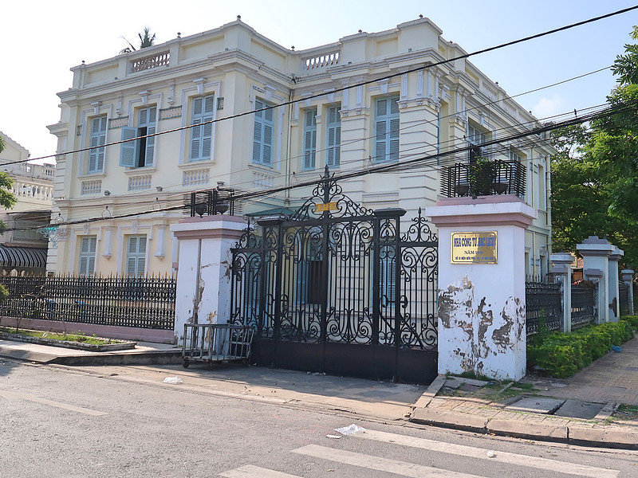
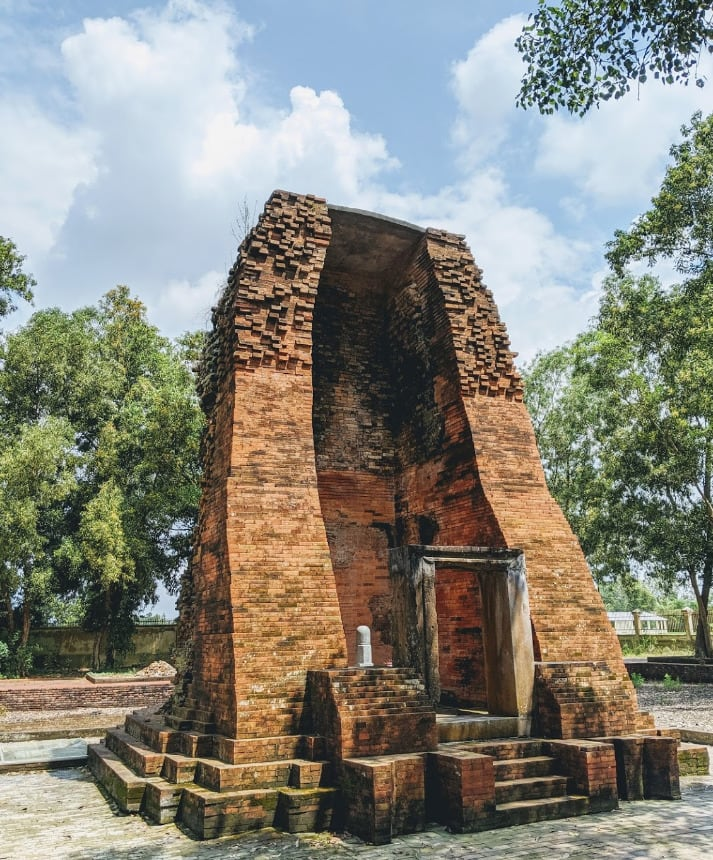
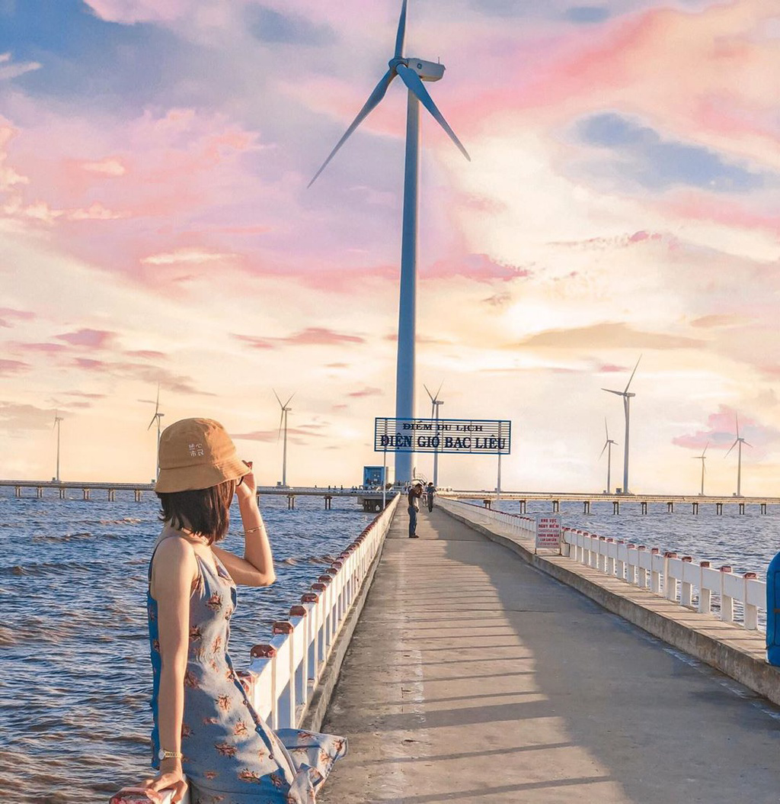
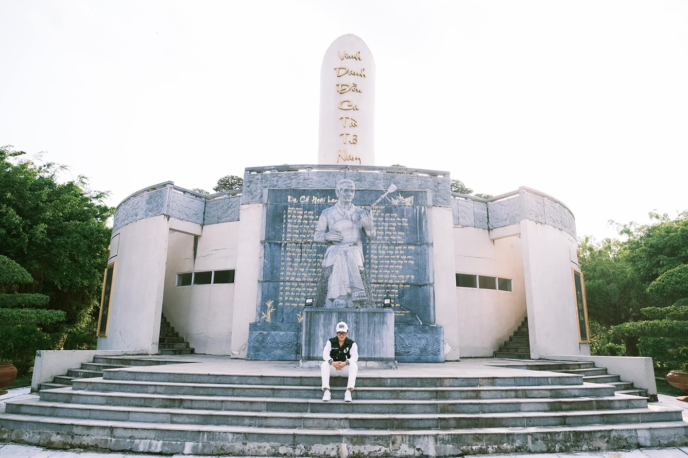
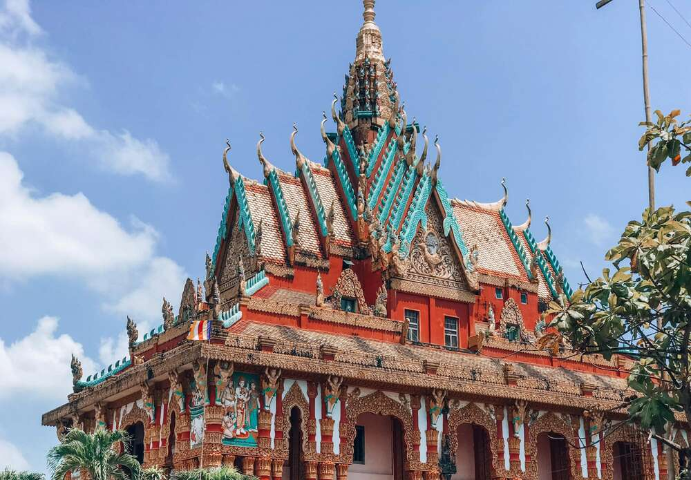
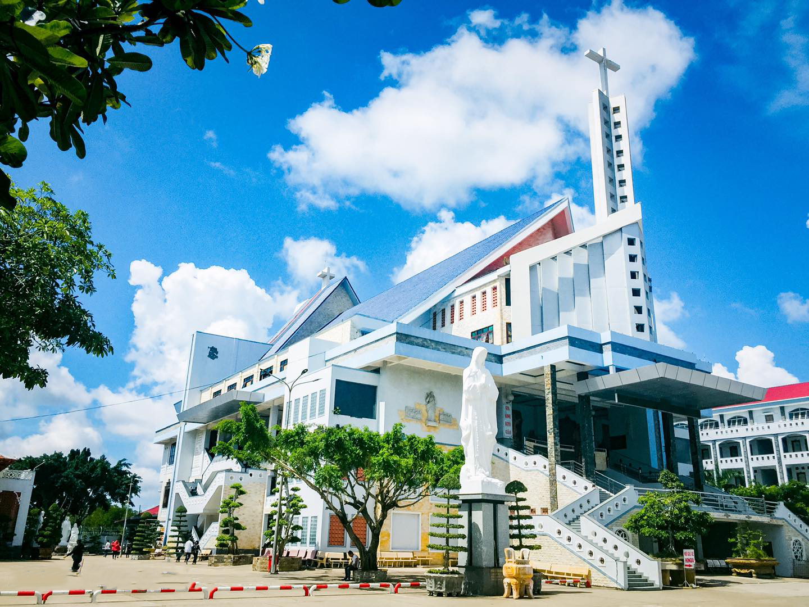
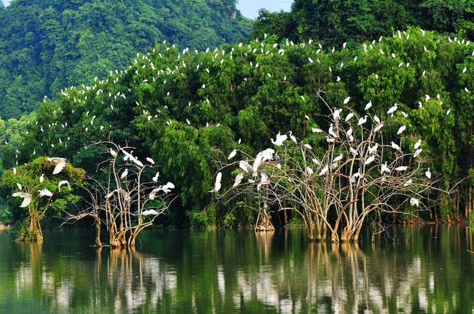
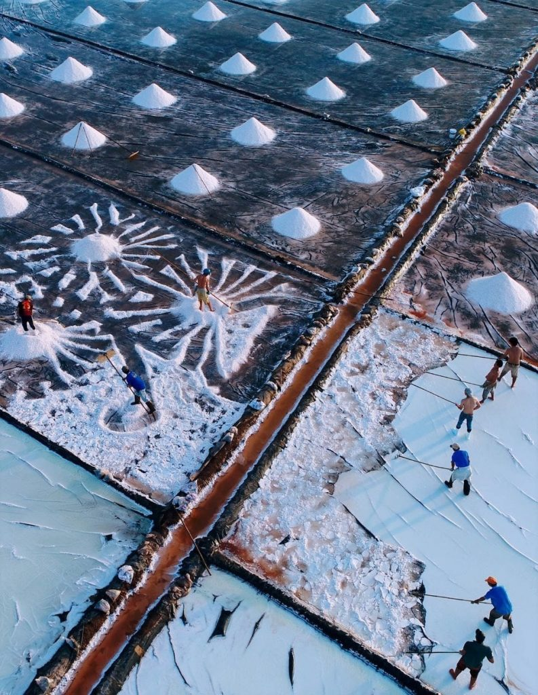

Công trình kiến trúc Pháp sang trọng bậc nhất Nam Kỳ đầu thế kỷ 20, nơi lưu giữ những hiện vật giá trị cùng câu chuyện về lối sống "vương giả" lừng danh một thời của cậu Ba Huy

Di tích kiến trúc nghệ thuật thuộc nền văn hóa Óc Eo duy nhất còn tồn tại nguyên vẹn ở miền Tây, mang giá trị lịch sử và tâm linh sâu sắc qua hàng ngàn năm.

Công trình năng lượng sạch hiện đại bậc nhất khu vực, thu hút du khách bởi hàng chục tuabin gió khổng lồ quay thong dong trên nền trời biển mênh mông, tạo nên khung cảnh thơ mộng tuyệt đẹp.

Nơi vinh danh tác giả bản "Dạ cổ hoài lang" bất tử – cái nôi gìn giữ và phát triển di sản phi vật thể Đờn ca tài tử Nam Bộ được UNESCO công nhận.

Ngôi chùa Khmer Nam Bộ rực rỡ với sắc đỏ - vàng chủ đạo, nổi bật bởi các đường nét chạm khắc rồng, thần linh tinh xảo, thể hiện trọn vẹn nét văn hóa tâm linh đặc sắc.

Trung tâm hành hương tâm linh lớn và nổi tiếng miền Tây, thu hút hàng triệu du khách thập phương mỗi năm đến viếng thăm, chiêm bái và cầu bình an.

Khu bảo tồn thiên nhiên hoang sơ duy nhất nằm ngay trong lòng thành phố, là ngôi nhà chung của vô số loài thực vật cùng hàng trăm ngàn cá thể chim, cò quý hiếm.

Bức tranh lao động mộc mạc và chân chất, nơi những ô muối trắng xóa phản chiếu ánh nắng bình minh, phản ánh nghề làm muối truyền thống lâu đời của người dân vùng duyên hải.